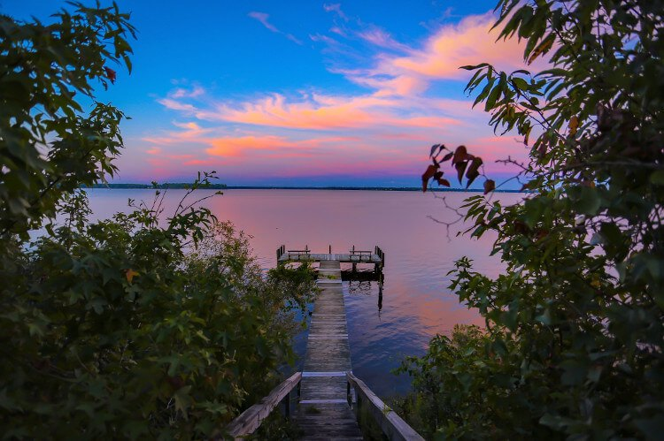

What comes easy won’t last long, and what lasts long won’t come easy.As you breathe,allow your body to completely and fully relax. Stress is flowing out of you with each breath. Your body is becoming limp and comfortable. Let the tension in your brow go. Let the tension in your lips go. Let the tension in your eyes go. Just relax in the comfortable darkness that surrounds you.  Once you feel completely relaxed and centered, start to bring yourself to one of your favorite, peaceful, beautiful places. This could be a place you’ve been before like a silent redwood grove with cool shade and towering ancient trees that protect you in their mammoth embrace, or a white sand beach where the ocean waves gently lap the shore and the smell of the sea makes you feel at home. Take a walk and look at the lovely, peaceful, relaxing surroundings. Before you were looking at this peaceful scene like a painting from a distance. Now you’re in the scene. You’re living it. Be there right now. What do you see around you? There’s no need to actually verbally answer this question. Just look around and see what you see. What in this scene is most relaxing to you? Take a walk in this special place and see all that you can see. What do you smell in the air? Can you smell the trees and the soil of the forest floor beneath you? Do you smell the salty air of the ocean side? Bring scent into your visualization. Smell the air where you are. Reach out and touch something that’s attractive and peaceful to you. How does it feel? Is it soft to your touch? pause for a moment... You’re living in the scene. You can feel the ground beneath you and the air on your skin. How does it feel? Take a moment to listen. What sounds do you hear in this beautiful new surrounding? Can you hear birds chirping in the woods? Do you hear the ocean waves in their perpetual booming rhythm? Perhaps there is music from an ancient flute in the background, or maybe you hear the voice of an old friend that soothes and calms you. Whatever you hear, take a moment now to enjoy listening to it. You can stay in this scene as long as you want to, enjoying this moment of relaxation that you’ve taken for yourself. Feel free to walk around in this special place as long as you want. It’s yours. You can change the scene as you wish. Remember that this special place is always here for you. You can come back to it whenever you wish. You need not be afraid to lose it. It’s always with you. The relaxation that you feel right now at this moment in your body is yours to call on any time you wish. When you’re ready, slowly let the scene before you dissolve back into your mind. Allow yourself to slowly come back to the comfortable darkness that was there before you imagined your special place. When you’re ready in your own time, you can slowly open your eyes and come back to this moment, this time, and this reality. Before you get up, take a moment to note how relaxed you feel right now, and then slowly, attentively, lovingly move on with your daily life.